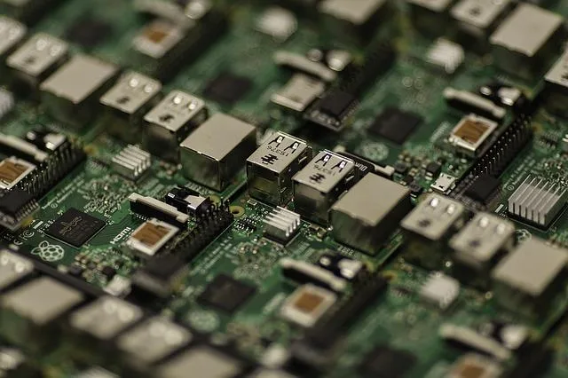

Installation of Whonix on a Raspberry Pi

Whonix on Raspberry Pi.
Introduction
- Downloadable images: Unavailable. There are no downloadable images ("ports") of Whonix at time of writing. There is no ETA (estimated time of arrival) yet.
- Build from source
code: Testers only. Whonix is a
derivative of
 Kicksecure. Some users are using Whonix on other architectures. (See Existing
Ports of Whonix.) Therefore it is conceivable, that Whonix can run
on
Kicksecure. Some users are using Whonix on other architectures. (See Existing
Ports of Whonix.) Therefore it is conceivable, that Whonix can run
on Raspberry Piarchitecture as well. The user could attempt to Build Whonix Images from Source Code. - Distribution Morphing:
Developers only.
Distribution Morphing is likely possible (Whonix
Installation from Whonix APT Repository), but virtualizer
configuration requires more work.
Future
Might become available a while after after Whonix has been ported to Debian 13 / trixie. [1]
See Also
- ARM64
-
Raspberry Pi - RPi
Footnotes
- ↑ grml-debootstrap pull request: Add Raspberry Pi image generation support